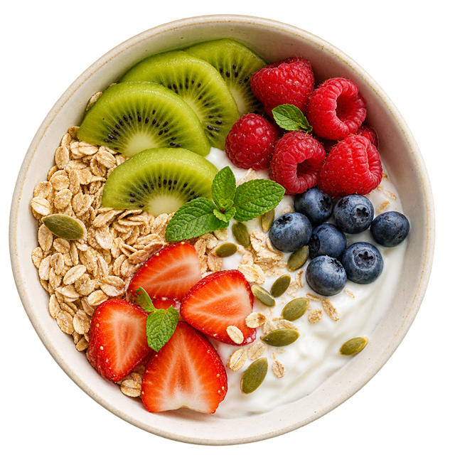

Kontakt
Zadzwoń lub napisz. Zapytaj o zakres oferty, koszt i dostępny termin.

Twoje potrzeby. Twój rytm dnia. Wsparcie dietetyka klinicznego w budowaniu codziennych nawyków żywieniowych.
Wybierz obszar, o którym chcesz porozmawiać.
Zakres i koszt współpracy ustalimy w kontakcie.
Porozmawiajmy o Twoim odżywianiu, codzienności i potrzebach. W gabinecie w Łodzi.
Zapytaj o szczegóły ↗02Indywidualne podejście do zmiany nawyków i pracy nad masą ciała.
Zapytaj o szczegóły ↗03Wsparcie żywieniowe uwzględniające Twoją sytuację zdrowotną.
Zapytaj o szczegóły ↗
Plan odżywiania dopasowany do Twoich preferencji i rytmu dnia.
Zapytaj o szczegóły ↗05Kontakt z dietetykiem także wtedy, gdy nie możesz odwiedzić gabinetu.
Zapytaj o szczegóły ↗
Przyjrzyjmy się codziennym wyborom i możliwościom zmiany.
Zapytaj o szczegóły ↗ Poznajmy się
Poznajmy sięDietetyk kliniczny · Absolwentka Uniwersytetu Medycznego w Łodzi
Za Fit Kaloria stoi człowiek. W poradni w Łodzi jest miejsce na rozmowę o Twoim odżywianiu, potrzebach i codziennym życiu.
Współpraca może obejmować konsultacje dietetyczne, analizę nawyków oraz indywidualny jadłospis. Pierwszym krokiem jest kontakt i wspólne ustalenie zakresu spotkania.
Zadzwoń lub napisz. Zapytaj o zakres oferty, koszt i dostępny termin.
Porozmawiaj z dietetykiem o swoich potrzebach i możliwościach współpracy.
Ustal z Karoliną indywidualny plan dalszej współpracy.
W tej wersji demonstracyjnej nie publikujemy opinii pacjentów. Pojawią się tu wyłącznie autentyczne wypowiedzi, po potwierdzeniu źródła i zgody na ich wykorzystanie.
Poniedziałek–piątek · 8:00–20:00
Po wcześniejszym umówieniu wizyty.
Zadzwoń pod numer +48 501 092 308 lub napisz e-mail. Termin zostanie ustalony bezpośrednio z poradnią.
O aktualny cennik i zakres współpracy zapytaj przez e-mail lub telefonicznie.
Tak. Skontaktuj się z poradnią, aby ustalić termin oraz sposób połączenia.